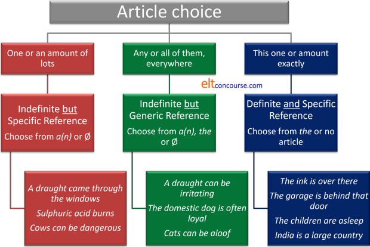

The article system

Articles in English form a sub-class of determiners. If you want the overview first, therefore, you should look at the guide to determiners.
 |
How many possible articles are there? |
English does not use the full range of articles (and it is unlikely that any language does) but there are possibilities in all languages and some will use more or fewer of the possible articles to determine nouns.
Here they are, with a few comments:
- The indefinite article:
In English this is either a or an but some will include some as a plural indefinite article.
Example are:
This is an interesting book
He came to a halt
Give me some coins
We have wasted an hour
It's a(n) historic moment
The issue for some learners is that the article an occurs slightly irregularly.
The general rule is that we use an before a vowel sound, but we use a before a consonant sound and in both cases disregard how the word is spelled because this is a pronunciation issue. So we get, e.g.:
an artist
a sculptor
a European issue
an honourable man
When the /h/ sound is unstressed, many BrE speakers will also use an instead of a so we have:
an historic moment
etc.
and some will choose to use an before hotel because the word is quite recently imported from French and the 'h' is not sounded in that language.
In quite a lot of languages which have an indefinite article, it is indistinguishable from the numeral one (and if not the same, then closely related to it). Unsurprisingly, the article a/an is derived from the word for one in English and is a reduced form of it. - The definite article
In English this is solely the word the because English does not have alternatives dependent on gender or number so we have e.g.:
The people all arrived late
The car went off the road
The choice is limited
Again, there is a pronunciation issue.
The article is pronounced /ði/ before a vowel sound and /ðə/ before a consonant sound, again, regardless of how a word is spelled. We have, e.g.:
the apple (/ði.ˈæp.l̩/)
the man (/ðə.mæn/)
the Euro (/ðə.ˈjʊə.rəʊ/)
etc.
And again, the unstressed /h/ sound is slightly problematic because some will choose to pronounce
the historical facts
as /ðə.hɪ.ˈstɒ.rɪk.l̩.fækts/
and some will prefer /ði.hɪ.ˈstɒ.rɪk.l̩.fækts/.
In a range of languages which do not have a definite article (or any article system at all) the equivalent of the definite article is often a demonstrative determiner roughly translatable as this or that, these or those.
In fact, the definite article in English shares an etymology with the demonstrative determiners and can be seen as a reduced form or them in Modern English. In other words, this, that, these and those can be conceptualised as forms of the definite article marked for spatial relationships (near or far) and number (singular or plural). - The proper article:
This is somewhat rare in English but occurs frequently in other languages leading some into error.
For example, in Greek, Portuguese and Catalan, it is conventional to use an article before people's name (the Peter, the Maria etc.). This also happens in informal use in German, French, Italian and Spanish.
The proper article occurs less often in English but examples are:
The Mr Jones I spoke to was very helpful
The Strand is a road in London
The Kremlin is in Moscow
The Gambia is in Africa
etc.
Usage varies and countries once conventional referred to with the proper article are no longer referred to that way so we have, e.g., Ukraine, not The Ukraine.
Modified country names conventional use the proper article:
The United States
The Soviet Union
The United Arab Emirates
etc. - The partitive article:
This only occurs in English with the determiner some as in, e.g.:
Please give me some paper
Pass me some pens
etc.
However, other languages use the partitive article frequently and these include French, Greek, Italian and a range of others and in many of those languages they consist of a combination of the definite article with a preposition. For example, in French, à + le = au and de + le = du. In Italian, the preposition di combines with the definite article to produce dello, della and other forms equivalent to some or any in English and called a partitive article. In Greek, the proposition se combines with articles to form ston, sti and so on. - The negative article:
In English, this role is taken by the word no which acts as a simple determiner. However, other languages may reserve an article-like item for this function. German, for example has the word kein which is inflected in the same way as the indefinite article to show gender and number.
Fundamentally, English does not use a negative article but for those whose languages do, comparing no to the indefinite article has some validity. - Zero article:
As the name implies, this is an absence of an article and is usually represented as ∅. Because English has a definite article denoting specificity as in, e.g.:
Give me the money
it also employs the zero article to denote an unspecified object before a count or mass noun as in:
Give me money
Take books with you
The word some can be used as an indefinite plural article or to determine a mass noun as in, e.g.:
Give me some money
Take some books with you
It is unhelpful to describe the lack of an article in languages which do not have an article system or those which have a reduced system as the zero article.
Languages differ dramatically in the use of articles (and some don't use them at all). Here's a short list but you should rely on your own research into the language(s) of your learners. Asking them is often useful as it alerts them to differences.
- Languages with no article system
- These include most Slavic languages (Russian, Polish,
Bosnian, Czech etc.) as well as Chinese languages, Indonesian,
Japanese, Hindi and Urdu.
For speakers of these languages, using the correct article in English is very challenging because they do not easily conceptualise the need to mark specificity and non-specificity or count vs. mass nouns. - Language with no indefinite article
- These include most Celtic languages (Breton, Welsh, Gaelic, Irish etc.) and Turkish, Farsi and Arabic (which often encodes the definite article as a prefix).
- Languages using affixation for articles
- Some languages do not have a separate word class of articles
but may use a similar system by adding suffixes to nouns.
These include Albanian, Macedonian, Bulgarian, Bengali, Romanian
and Scandinavian languages.
Other languages such as Hebrew and Maltese use prefixes to denote an article system akin to English.
Many languages alter articles to show gender (most European
languages) and it is impossible to use any noun, even an invented
one, without first considering its gender. European languages
have two or three genders normally although more are possible.
Some languages, such as Basque, Georgian and most Native American
languages distinguish between animate and inanimate nouns through
the use of gender.
Languages which are traditionally described as being article-less such as Japanese and Cantonese often use classifiers (sometimes called counters) to denote a wide range of properties in the nouns such as animacy, flatness, stick-like appearance and so on. For more, see the guide to classifiers, partitives and group nouns.
English, on the other hand, has no gender marking on articles but a deeply important distinction between definite and indefinite and specific and non-specific (or generic) concepts which is entirely lacking in many other languages. English also makes use, as we shall see, of the notions of mass and count nouns lacking in many other languages.
In what follows, we shall not be considering the negative article no or the partitive article some but we will look at the indefinite, definite and zero articles in English and consider proper articles in English as a subset of the definite article.
 |
Rule 1 |
Decide what you are talking about. There are only three choices:
- One or some of many – indefinite specific reference.
This means that the speaker / writer is referring to a specific
class of nouns but not to the specific instance of the noun.
In other words, the noun is not identifiable by the reader / hearer
other than knowing the class of nouns to which reference is being
made. The speaker / writer may or may not know more about the
noun but this information is not being communicated to the hearer /
reader. Compare this to the third point, below.
For example:
A man arrived
People arrived
Information got lost
In these examples, the hearer / reader only knows what sort of noun is in question (i.e., specific reference) but does not know any more about the noun (i.e., the reference is indefinite).
The reference is specific but indefinite. - All of them, everywhere – generic reference. This
means the speaker / writer is referring to a whole class of nouns,
not a single instance of the class. For
example:
The wheel was an important invention
A solicitor deals with legal matters
Doctors charge a lot in my country
In these examples, the speaker / writer is referring not to single instances of the nouns but to the whole class of nouns in general.
The reference is, then, generic but indefinite. - This one exactly – definite specific reference. This
means the speaker / writer is referring to a single, known instance
of the noun. For
example:
The man spoke to me.
London is the capital of Britain
Here, the reference is both definite (we know which noun is being referred to) and specific (we know what sort of noun is in question). Normally, both the writer / speaker and the reader / hearer are aware of some or all of the noun's characteristics and can use that information to distinguish between instances of the noun in question.
The reference is definite and specific.
 |
Rule 2 |
In each of these categories, there's a choice of which article to
use.
If we are talking about indefinite specific reference (one of
many or some of many), we can have, e.g.,
A man came in
Men
came in
Good furniture is expensive
If we are talking about generic reference (all of them,
everywhere), we can have:
A car is useful in the country
or
Cars pollute
or
Petrol is expensive
or
The cat is an independent animal
If we are talking about definite specific reference (this
one exactly), we can have:
The car is outside
The sugar is
in the cupboard
The cars are here
Great Britain is an island
What are the choices of article in each category?
Here's the picture:

We shall refine that diagram later.
 |
Rule 3 |
English is not unique but it does has a fundamental and very important distinction between mass and count nouns. Languages which do not have this distinction (or in which the distinction is not grammatically significant) generally have much simpler article systems, or none at all. It is almost impossible to use a noun correctly in English unless one has first considered whether it is being used as a mass noun or a count noun.
Indefinite specific reference (one of many)

Questions:
- If you use indefinite specific reference and want to talk about one of many uncountable
(i.e., mass) nouns such as acid or types of furniture
what article do you use?
Fill these gaps:
__________ tea contains as much caffeine as __________ coffee
I saw __________ water had damaged the books - If you use indefinite specific reference and want to talk about
one of many countable
nouns such as houses or chairs, what
article do you use?
Fill these gaps:
__________ room will be needed for the committee meeting.
I saw __________ fox in the garden - If you use indefinite specific reference and want to talk
about many countable nouns such as houses
or chairs, what article do you use?
Fill these gaps:
__________ cars are expensive in my country
We discovered __________ pollutants in the river water
Make a note and then click here for some comments.
- If you use indefinite specific reference and want to talk about one
(or some) of many uncountable
things such as acid or types of furniture
you use the zero article ∅.
So you have, e.g.,
Tea contains as much caffeine as coffee
I saw water had damaged the books
Accurate information is difficult to get
Brown sugar is better in coffee
etc. - If you use indefinite specific reference and want to talk about one of many countable
things such as tigers or chairs, you use
a(n).
So you have, e.g.,
A room will be needed for the committee meeting.
I saw a fox in the garden
I don't want to meet a tiger in the forest
I need a chair to sit on
etc. - If you use indefinite specific reference and want to talk
about many countable things such as tigers
or chairs, you use the zero article ∅.
So you have, e.g.,
Cars are expensive in my country
We discovered pollutants in the river
Tigers are dangerous
Chairs are not usually dangerous
etc.
Generic reference (all of them, everywhere)

Questions
- If you use generic reference and want to talk about
all uncountable things
such as money or water what article do you use?
Fill these gaps:
Children need __________ love
We discovered __________ pollution in the river water - If you use generic reference and want to talk about
all countable things in the
plural such as tigers or chairs, what
article do you use?
Fill these gaps:
__________ houses are expensive everywhere
I enjoy watching __________ animals - If you use generic reference and want to talk about
one countable thing in the
singular as representative of all such as tiger or wheel, what article
do you use?
Fill these gaps:
__________ train is usually cheaper than driving alone
__________ smart phone has changed people's lives
__________ dog is a faithful animal
Make a note and then click here.
- If you use generic reference and want to talk about
all uncountable things
such as money or water, you use the zero article
∅.
So you have, e.g.
Coffee contains caffeine
We discovered pollution in the river water
Money makes the world go round
Water is essential to life on earth
etc. - If you use generic reference and want to talk about
all countable things in the
plural such as tigers or chairs, you
use the zero article ∅.
So you have, e.g.
Children need love
Houses are expensive everywhere
I enjoy watching animals
Tigers are large cats
Chairs are seen everywhere
etc. - If you use generic reference and want to talk about
one countable thing in the
singular as representative of all such as unicorn
or wheel, you use the definite article the
or the indefinite article a(n).
So you have, e.g.
The train is usually cheaper than driving alone
The smart phone has changed people's lives
A dog is a faithful animal
The unicorn is a mythical beast
etc.
The indefinite article may be used to speak of generic and specific reference such as in
A train is a comfortable way to travel
The issue is often stylistic and we could equally say:
Trains are a comfortable way to travel
which many might consider less formal and stilted.
Definite specific reference (this one exactly)

Questions:
- If you use definite specific reference and want to talk about
one amount of a
particular uncountable thing such as acid or sugar
what article do you use?
Fill these gaps:
__________ cardboard is in the garage
__________ grass needs cutting - If you use definite specific reference and want to talk about
more than one countable
thing such as tigers or cars, what
article do you use?
Fill these gaps:
__________ men you spoke to have decided
The officer directed __________ drivers to stop - If you use definite specific reference and want to talk about
one countable thing
such as tiger or car, what article do you
use?
Fill these gaps:
__________ car I bought was quite cheap
__________ phone is ringing in the hallway - If you use definite specific reference and want to talk
about one particular proper noun such as Berlin
or Mary, what article do you use?
Fill these gaps:
__________ Napoleon was Emperor of France
I gave the book to __________ Aunt Mary
Make a note and then click here for comments.
- If you use definite specific reference and want to talk about
one amount of a
particular uncountable thing such as acid or
sugar, you use the definite article the.
So we have
The cardboard is in the garage
The grass needs cutting
The sugar is behind the flour
The acid is on the bench
etc. - If you use definite specific reference and want to talk about
more than one countable
thing such as tigers or cars, you use the
definite article the.
So we have, e.g.
The men you spoke to have decided
The officer directed the drivers to stop
The tigers are upstairs
The cars are in the driveway
etc. - If you use definite specific reference and want to talk about
one countable thing
such as tiger or car, you use the
definite article the.
So we have, e.g.
The car I bought was quite cheap
The phone is ringing in the hallway
The tiger is behind you
The car is on the road
etc. - If you use definite specific reference and want to talk
about one particular proper noun such as Berlin
or Mary, you use the zero article ∅.
So we have, e.g.
Napoleon was Emperor of France
I gave the book to Aunt Mary
Mary has arrived
It's raining in Berlin
etc.
Warning: there are many exceptions to this rule (see below).
Now we can refine the picture we had above to include the notion of (un)countability.

 |
Articles in discourse |
Articles have a discourse function and, as with much in connected discourse, a good deal depends on shared information.
Course books for learners will often have simplified (and often
inaccurate) 'rules' for article use and we have set out the three
main ones above. When these rules are apparently broken, the
explanation often lies in the nature of the use of articles in
discourse.
Consider these examples:
- A car arrived outside my door and the
driver got out and walked up the path.
If we follow the rule that the noun car here is specific but indefinite reference (i.e., it refers to one of many countable objects), then that happily explains the use of the indefinite article, a.
However, the noun driver is also specific indefinite reference, isn't it? So, why the definite article which in the chart above is not an option because that applies to definite specific reference?
The answer lies in the shared information. We know that only one driver is permitted per car and we also know which car is in question (it is the one which arrived) so we are, in fact, talking about definite specific reference and the rule above is not broken.
This will also explain the use of the path because, again, the use of the definite article tells the hearer that the speaker has only one path from the car to the house (or, at least, that this path is only one that is relevant to what happened next). If the sentence had been
A car arrived and a driver got out and walked up a path
then different messages will be sent:
In this case it means that this driver was not actually driving the car at all but is a member of a class of drivers so it then becomes indefinite specific reference (just as the article in a car is being used). It also means that there were more than one paths and the person chose one of them, not a definite one from those available so that, too, is indefinite specific reference. - We chose a present for my brother but it was
not a present he wanted
Here, we have a present chosen from innumerable possibilities so the first article follows the rule: we are talking about a single specific but indefinite case so the indefinite article is valid.
However, we then have a present again and this time it seems that the reference is definite and specific because we know what the present was (the one we chose). Should it not, then, be the present?
It could be, of course, but that would imply that he had other presents in mind that he did want (a definite and specific present) and the use of the article the would imply that.
However here, two things are happening:- We have the dummy or existential it-clause in it was not a present he wanted so that serves to denote the definite nature of the present
- We then have an indefinite article implying that from a
large number of possible presents, this one was not wanted
and that is indefinite specific reference so the rules are
not broken, it is the discourse intentions of the statement
that leads to the article choice. If we compare:
He said he didn't want a gift like this
with
He said he didn't want the gift
the difference becomes plain. The first is indefinite specific reference and the second is definite specific reference.
- A cat can be good company for lonely people
A cat is an independent animal
Cats are independent animals
The domestic cat is descended from wild animal in the Middle East
If these are all examples of generic reference to countable nouns, why the difference?
Partly, as was said above, this is a stylistic issue.
The use of the indefinite article to refer to a generic case of a countable noun requires the use of the singular form. It is generally considered to be stylistically rarer and more formal.
The form of choice is usually the plural as in the third example but the second example is common enough.
In the first example, we have a grey area because it may be assumed that the speaker is referring to indefinite specific reference (on the left of the diagram above) and suggesting that lonely people should acquire a cat (any cat) for company rather than suggesting that all cats are suitable as company for all lonely people.
The final example, too, verges on definite reference (on the right of the diagram) because of the use of the classifier domestic. Classifiers often have the function of moving the generic to the definite in terms of reference so the use of the definite article is appropriate.
Quirks and exceptions |
Exceptions with the
The English article system is often wrongly presented as an
impossibly difficult area. As we saw, however, the rules are quite
simple. There are, however, a few quirks and exceptions concerned
with the use of the definite article. Many of these, however, can
be traced back to the rules above.
These aren't lesson topics – they should be taught as and when
they arise.
- One teachable case of definite specific reference (this one
exactly) is when the noun has been mentioned or it can be assumed
that a unique reference is intended and understood.
So we get, e.g.
A car drove by and the driver waved
The toilet's probably upstairs
etc.
This is often referred to as the unknown-known rule and can easily be explained that way. An alternative explanation of a sentence such as:
She bought a new car. The car broke down on her first journey.
is:- in the first instance, we are referring to an indefinite specific reference for a countable noun and that, as we saw, requires the indefinite article.
- in the second instance, we are now referring to a definite specific reference for a countable noun (because we now know that the car was hers) and that requires the use of the definite article.
- When a noun is modified, it's also a sign of definite specific
reference.
So we get, e.g.
The man who is married to the Minister
The author of this article
The girl in the corner
etc.
Modification takes many forms.
A subset of this category contains country names which are modified by an adjective such as United, Islamic, Peoples' or Federal: the United States, the Federal Republic etc. Otherwise, nations and languages take ∅ (the zero article). Another subset contains things like the Doppler Effect, The Theory of Relativity etc. but when the possessive 's is used there is no article: Einstein's Theory, Murphy's Law. - Unique objects (or objects unique in a certain shared setting):
the sun, the moon, the Milky Way, the queen, the president
etc. A subset of this category contains things like
nationalities, geographical areas and superlatives: the Greeks,
the French, the biggest building, The Atlantic etc.
The latter can be explained by noting that the modifier has been omitted: The Atlantic (Ocean), The (River) Amazon, The Tate (Gallery) The Alps (Range), The Hilton (Hotel). Note the convention to capitalise the article in some cases. Plural countries always take the article: The Netherlands, The Bahamas, The Seychelles. - Families count as plural definite specific reference: Take tea with the Windsors
- Rivers always take the definite article the, even if they aren't unique: The Stour, The Thames, The Nile. Lakes don't usually but modification (The Great Lakes) occurs.
Exceptions with ∅ (the zero article)
- Some common prepositional phrases often with verbs like go, have, get, eat, and be involve indefinite specific reference: go by bus, be in school / church / prison / hospital, go to university etc. The nouns are nearly always means of transport, meals, illnesses or institutions: have appendicitis, get flu, eat lunch, travel by air, go to college etc.
- Times with the prepositions at, by, after, before take the zero article but those following during and in take the: at dawn / sunset / night, by dusk / sunrise / evening, after dark, before nightfall, during the day, in the morning etc.
- Parallel structures take ∅: hand in hand, man to man, right to left, pen in hand etc.
There are a couple of exercises for more advanced learners on article
use in the section for learners on this site.
Go to that index, find the exercises and see if you can identify
which rules from all of this are applicable.
There is also
one lesson for elementary-level learners which focuses on the
for unique use, some for mass nouns and plural count nouns and
the known-unknown rule for using a(n) and the.
If you would like an abbreviated version of this guide as a PDF document, click here.
If you are happy that you have understood the nature of the article system in English, you can go on to considering the teaching and learning implications in this area. Click here to do that.
Click to take a test in this area.